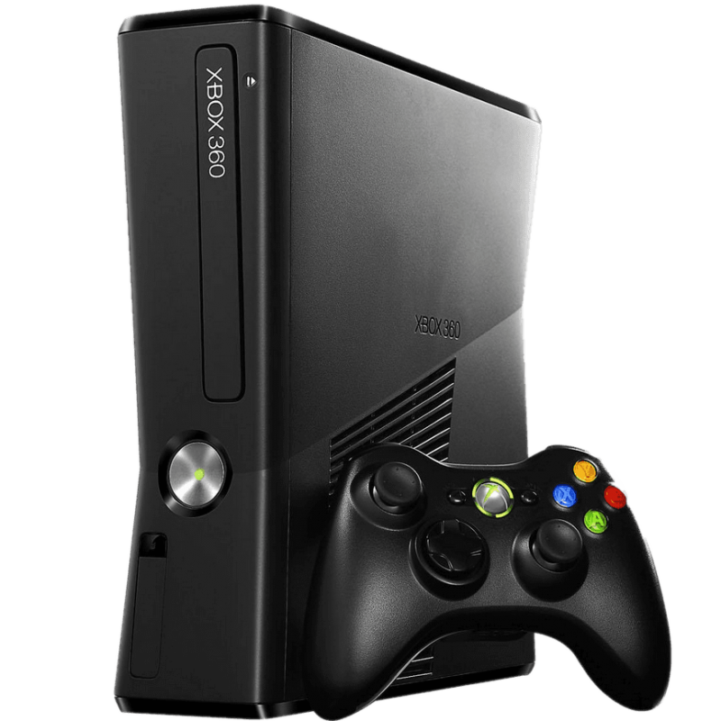

La primera Xbox se lanzó el 15 de noviembre del 2001, pero la historia de la consola se remonta a 1993, cuando Microsoft decidió que su próximo sistema operativo (Windows 95) estaría orientado a facilitar la programación de videojuegos y contenido multimedia, un mercado al que hasta entonces la compañía no se había sentido cómoda en abordar, pero que estaba creciendo a pasos agigantados. Para eso Microsoft desarrolló DirectX, un conjunto de APIs (interfaces de programación de aplicaciones) que facilitaban el desarrollo de juegos, con esto la empresa buscaba atraer la mirada de la creciente industria de los videojuegos. En 1995 la compañía lanzó un kit para desarrolladores de juegos para Windows, que con el tiempo se incorporó a Windows NT. Sin embargo, los creadores no se mostraron impresionados y a cuenta gotas (y solo los que ya se especializaban en juegos para PC) le dieron una oportunidad al sistema. En 1996 Microsoft asumió que, si quería una parte del jugoso negocio de los videojuegos, debía ser más agresiva. Por eso organizó una serie de actividades y presentaciones para mostrarle las bondades de DirectX a los desarrolladores de juegos, logrando despertar su interés. La enorme cantidad de juegos que comenzaron a inundar a las PCs entre finales 1996 y la primera mitad de 1998 demostró que el plan de Microsoft de entrar al mercado gamer no era errado, de hecho dotó a la compañía de grandes ingresos.
El problema para la compañía surgió cuando la PlayStation de Sony arribó al mercado y logró que muchos jugadores de PC migraran a las consolas, que se llenaron de juegos para un público “maduro”, hasta entonces disponibles casi exclusivamente en las PCs. Por eso la compañía comenzó a pensar que tal vez no sería una mala idea incursionar en el mercado de las consolas caseras. Si bien la idea parecía bastante arriesgada —basta recordar que unos pocos años antes Apple sufrió una gran humillación con el fracaso de su consola de videojuegos Pippin—, muchos dentro de la compañía creían que tenían una oportunidad para hacerse de un lugar en el mercado. Así, por iniciativa del mismísimo Bill Gates (todavía CEO de Microsoft), en 1998 la compañía le encargó a dos pequeños equipos de cuatro ingenieros ponerse manos a la obra para diseñar una consola de videojuegos basada en DirectX. Los dos equipos fueron por caminos diferentes, unos desarrollaron su producto como una “PC disfrazada” y el otro pretendía que la consolas fuera más similar a las existentes. De hecho, su versión era una copia del Dreamcast, incluso en el diseño de su control y el enfoque para internet:
Finalmente, por medio de un comunicado, el 10 de marzo de 2000 se confirmó el nuevo proyecto y su nombre oficial: Xbox, conservando sólo la “X” del nombre original. A pesar de que no tener una franquicia importante en su lanzamiento —y contar con una horrible campaña publicitaria—, esto le sirvió para apoyar con todo a juegos con gran potencial, como Halo: Combat Evolved, un juego exclusivo de la plataforma realizado por el estudio Bungie (que terminó por convertirse en la principal franquicia de Microsoft cuando la compañía compró a Bungie) y Star Wars: Knights of the Old Republic; además apostó por tener una buena relación con varias desarrolladoras, como Electronic Arts, que le permitieron lanzar paquetes con los juegos de FIFA (en América Latina y Europa) y Madden NFL (en Estados Unidos y Canadá); sin mencionar los juegos exclusivos como Project Gotham Racing 2, Dead or Alive 3 o Ninja Gaiden Black. Además del golpe mediático al comprar a Rare, la desarrolladora de títulos como Battletoads, Donkey Kong Country, Killer Instinc, Conker y Goldeneye 007. Si bien la consola nunca despuntó en Asia, fue lo suficientemente exitosa para ser una de las consentidas del resto del mundo, quedando solo por debajo de la PlayStation 2 de Sony en materia de ventas totales, siendo sus mercados fuertes los del continente americano. Xbox logró vender 24 millones de unidades a lo largo del mundo antes de ser descontinuada y sustituida por la Xbox 360. Así, Microsoft logró tomar el lugar de Atari como el gran faro occidental en la industria de videojuegos e hizo de Xbox la nueva gran consola americana.
